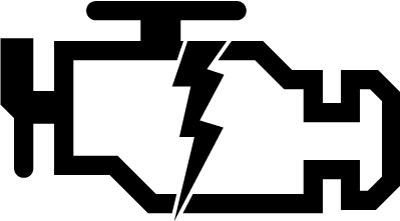

The Software Maintenance Light
Vote on HN Tweet My cute little box car, Chuck, came with an owners manual. Inside this little book, it lists all the mileage intervals when Chuck should be serviced. At 30,000 miles, you replace the spark plugs, rotate tires, inspect the brakes, etc. In addition to these checklists, every 5000 miles Chuck beeps at me and flashes a maintenance light to warn me that I should replace the engine oil. As my car nears 50,000 miles, it never ceases to amaze me that every time I turn the key, Chuck starts up instantly and runs as well as he did when I first got him. I wish software could be as reliable as my car. Heck, if it's too much to ask for software to be as reliable as a Toyota, then I wish software could be as reliable as a mid-90's Chevy Cavalier. How could it be that an engine that explodes thousands of times per minute for multiple decades over hundreds of thousands of miles in all types of unpredictable weather conditions be more reliable than software? Then it hit me. Software applications lack regular maintenance.
{kind=link}
Even with the best development practices, I feel that many software projects are missing this concept of maintenance. Once a feature is completed, it won't be touched again until a) the feature breaks, or b) requirement changes affect the feature. There doesn't seem to be a holistic look at the entire app to make sure there aren't future problem spots. Going back to the car analogy, when you go for regular maintenance, the entire car is checked over to identify future problem spots so you don't have an unexpected catastrophe on the road.
So like Chuck's owner's manual, I propose the following "Software Maintenance Schedule":
Always
Anytime code is changed, no matter how seemingly innoculous the change is, there is room for error. These tasks should be run whenever you touch the codebase.
- run all your tests - check out continuous integration. For Ruby, I've tried out Integrity and CruiseControl rb.
Daily
The daily tasks are ones that are too bulky to run per file save. They're good for ensuring the consistency of the entire system.
- backup the codebase and production data to a secure offsite location
- run regression tests
- fix hoptoad errors - for large problems, file it into your ticketing system.
- deploy code to staging environments
I like to have the staging environment closely reflect the actual production environment. In fact, the ideal way is to have the staging environment be cloned nightly from production. Take care to scrub out sensitive information so you don't accidentally mass email your live production users ;)
Weekly
The end of the week is a good time to step back from coding and admire your team's handiwork. Unfocus your eyes, take your hands off the keyboard and just make sure you wrote what you actually intended.
- release into production
- refactoring - spend an afternoon with snacks and drinks and comb over TODOs, OPTIMIZEs, and FIXMEs.
- evaluate metrics and analytics to identify performance and potential problems
I don't think releasing into production weekly is for everyone, but I do believe that keeping your stable production codebase closely in sync with your stable development codebase is a good way to keep production bugs from queueing into a nasty long list.
Tools like Hoptoad and New Relic RPM are a great way to be notified about potential future problems.
Monthly
- test a deployment from scratch
- clear out crufty data - old sessions, tmp files
- automate common tasks
Testing a deployment from scratch is useful in making sure that if a new developer comes on, he can bootstrap the app. I like writing new automation tasks only after I notice the tasks being repetitive. It's good not to do this all the time and cut into development time.
Releasely
Do these tasks before you actually overwrite your current production codebase with new code.
- tag codebase
- test rigorously in staging
- backup code, data
- run sanity test of data
- run regression tests
Quarterly
- see if there are worthwhile tech stack upgrades - web server, libraries, database, etc
It's easy to stick with a working system and keep developing off on top of an understood foundtain. However, in doing so, you might be missing out on some really useful innovations that have been released. For Coupa, we don't slot in infrastructure and tech stack projects into every release, but we do upgrade Rails and Passenger every other stable release or so. Keeping up with your programming community helps you and your project stay up to date on the latest security and performance problems.
I think all my guidelines are common sense items that good development teams already do. What worries me is that there isn't a good convention about how often these tasks are done. After all, it's much easier to check for problems when the maintenance light comes on, rather than to wait for your engine to fall out.